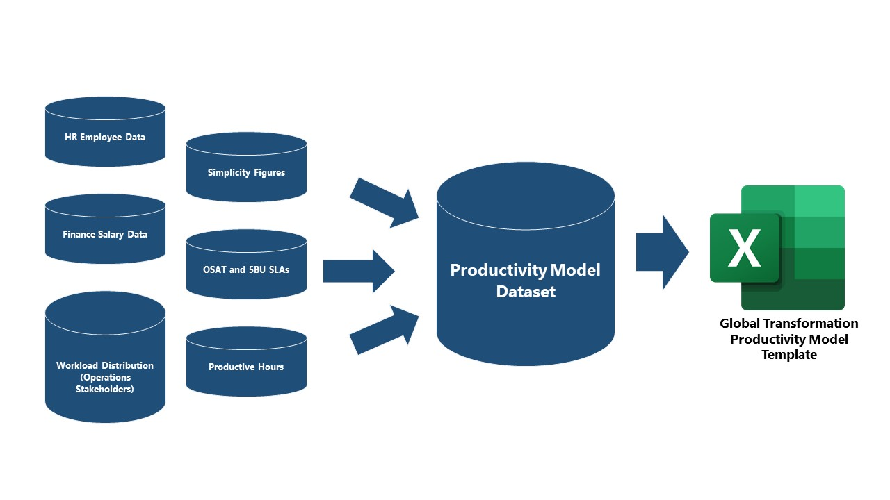

<!DOCTYPE html>
<html lang="en">

</html>

<head>
    <title>Nextcare Data Intelligence</title>
    <link rel="stylesheet" href="../css/styles.css">
</head>
<body>
<div class="main-body">
    <nav id="navbar">
        <div class="vrn">
            <a href="../index.html"><b>Home</b></a>
            <a href="../perf-mngt/prod-model.html">
                <sub>Project Documentation<br><i>Version 0.1 draft</i></sub>
            </a>
        </div>
        <header>
            Productivity Model
        </header>
        <ul>
            <li><a class="nav-link" href="#overview">Project Overview</a></li>
            <li><a class="nav-link" href="#source">Source Data</a></li>
            <li><a class="nav-link" href="#data">Data Processing</a></li>
            <li><a class="nav-link" href="#template">Workbook Template</a></li>
            <li><a class="nav-link" href="#scope">Project Scope</a></li>
            <li><a class="nav-link" href="#assumptions">Assumptions</a></li>
            <li><a class="nav-link" href="#hr">Data Transformation: HR File</a></li>
            <li><a class="nav-link" href="#fin">Data Transformation: Finance Cube 3M</a></li>
            <li><a class="nav-link" href="#npw">Data Transformation: Non-Platform Workload</a></li>
            <li><a class="nav-link" href="#pnp">Data Transformation: Platform Staff doing Non-Platform Functions</a></li>
            <li><a class="nav-link" href="#pmw">Data Transformation: Platform Managers Workload</a></li>
        </ul>
    </nav>

    <main id="main-doc">
        <section class="main-section" id="overview">
            <br><br>
            <h2>Project Overview</h2>
            <article>
                <h3>Nextcare Productivity Model</h3>
                <p>
                    Nextcare Productivity Model is part of Allianz's Global Productivity Model Project 
                    that aims to measure the overall productivity of Nextcare Operations Platform. 
                </p>
            </article>
        </section>

        <section class="main-section" id="source">
            <br>
            <!-- <br> -->
            <h2>Source Data</h2>
            <article>
                <h3>Sources of Data</h3>
                <p>
                    The main variables used in the model are headcount of full-time employees, labor and non-labor cost of employees, 
                    employee productive hours, employee output, and customer satisfaction survey results. 
                    These information were gathered from the Business Intelligence system, Finance, Operations Management, and HR Deparment
                    from different Nextcare Business Unit. 
                </p>
            </article>
        </section>

        <section class="main-section" id="data">
            <br>
            <!-- <br> -->
            <h2>Data Processing</h2>
            <article>
                <h3>From Raw Data into the Productivity Template</h3>
                <p>
                    Collected information are consolidated, cleaned, and validated and then loaded into and single dataset, 
                    which serves as the single reference of all the formulas and calculations inside the productivity template.  
                </p>
                <br>
                <i>Diagram 1.0. </i>Data Processing Cycle
                <br>
                
                
                <br>
                <i>Table 1.0. </i>Data Processing Cycle
                <br>
                <table class="styled-table">
                    <tr>
                        <th>FROM <br> Source File & Description</th>
                        <th>PROCESSED THROUGH <br> Alteryx / Direct Source</th>
                        <th>TO <br> Table Key of the Template <br> (Input Worksheets, refer to Workbook Template section)</th>
                    </tr>
                    <tr>
                        <td><b>HR Jan-Aug 2022.xlsx</b>
                            <br> <i>Headcount of employees per month</i></td>
                        <td><b>Alteryx</b> <br> wf_fte-count-2022.01-08_v2.yxmd</td>
                        <td>t1.</td>
                    </tr>
                    <tr>
                        <td><b>Average Salary Data.xlsx</b>
                            <br> <i>Average Salary per Cost Center based on 3M (2022 January to March)</i></td>
                        <td><b>Alteryx</b> <br> wf_finance-cube-3m-2022.01-03.yxmd</td>
                        <td>t2.</td>
                    </tr>
                    <tr>
                        <td><b>Non-Platform FTE - Workload distribution.xlsx</b>
                            <br> <i> Distribution of workload of FTEs from non-platform functions in relation to the model scope 
                            <br> (Pre-Certifications, Direct Billing Claims, Reimbursement Claims, Medical Claims)
                            </i></td>
                        <td><b>Alteryx</b> <br> wf_non-platform-workload.yxmd</td>
                        <td>t3.</td>
                    </tr>
                    <tr>
                        <td><b>Platform staff on non-platform functions.xlsx</b>
                            <br> <i>Platform FTEs doing non-platform functions such as Performance Management, Quality Management, etc.</i></td>
                        <td><b>Alteryx</b> <br> wf_platform-staff-doing-non-platform.yxmds</td>
                        <td>t4.</td>
                    </tr>
                    <tr>
                        <td><b>Simplicity Figures 2022_08_v2.1.xlsx</b>
                            <br> <i>Operations output, count and amount based on Invoice and Claim</i></td>
                        <td><b>Qlik BI</b> <br> Simplicity Figures from Performance Management Team</td>
                        <td>t5.</td>
                    </tr>
                    <tr>
                        <td><b>osat-6bu-report.xlsx</b>
                            <br> <i>Rating from Satisfation survey, Turnaround Time SLAs and Active Beneficiary count</i></td>
                        <td><b>Qlik BI</b> <br> OSAT and 6BU Report from Performance Management Team</td>
                        <td>t6.</td>
                    </tr>
                    <tr>
                        <td><b>consolidated-platform-mngrs-non-platform-workload-distro.xlsx</b>
                            <br> Work time allocation of Platform Managers doing non-platform functions</td>
                        <td><b>Alteryx</b> <br> wf_platform-mngrs-non-platform-workload.yxmd</td>
                        <td>t7.</td>
                    </tr>
                    <tr>
                        <td><b>prod-hours-conso.xlsx</b>
                            <br> Functions expected and actual productive hours, including external and internal shrinkages</td>
                        <td><b>Alteryx<b> wf_productive-hours.yxmd</td>
                        <td>t8.</td>
                    </tr>
                </table>
            </article>
        </section>


        <section class="main-section" id="template">
            <br><br>
            <h2>Workbook Template</h2>
            <article>
                <h3>Productivity Model Template</h3>
                <p>
                    The Productivity Model template has three main sections. These are: (1) consolidated worksheets; (2) data; and (3) input worksheets. 
                    <br><br>
                    The DATA worksheet serves as the source destination of raw data gathered from BI systems, HR, Finance and Ops Management.
                    The DATA worksheet is the only sheet required for any input/adjustment. 
                    All of the following data that is inputed in the DATA worksheet is sourced from Alteryx / direct source:
                    <ul>
                        <li>HR FTE Count</li>
                        <li>HR Average Salaries</li>
                        <li>Finance Cube</li>
                        <li>Operations Stakeholders</li>
                            <ul>
                                <li>Non-Platform function workload</li>
                                <li>Platform FTE doing non-platform function</li>
                                <li>Platform Managers doing non-platform function</li>
                                <li>Platform Productive Hours</li>
                            </ul>
                    </ul> 
                    <br>
                    For each business unit, there is a designated INPUT and CONSOLIDATED worksheet.              
                    <br><br>
                    The INPUT worksheet contains all the KPIs and data points required in the model. 
                    <br><br>
                    The INPUT worksheet requires NO manual modification. The input sheet reads directly from the DATA worksheet.
                    <br><br> 
                    The CONSOLIDATED worksheet provides the output Unit Cost. 
                    <br><br> 
                    The CONSOLIDATED worksheet requires NO manual modification. It reads directly from the DATA worksheet.
                    <br><br>
                    The template also includes a worksheet for the global input.
                </p>
            </article>
        </section>

        
        <section class="main-section" id="scope">
            <br><br>
            <h2>Project Scope</h2>
            <article>
                <h3>Productivity Model Scope</h3>
                    <p>
                        Nextcare Productivity Model involves all Nextcare Business Units (BU) such as UAE, Lebanon, KSA, Egypt, Tunisia, and Morocco. 
                        Inputs from gulf entities are added to the UAE, thus creating a UAE+Gulf BU in the model. 
                        Nextcare Greece is out-of-scope. 
                        <br><br>
                        The functions included in the model are Pre-Certifications, Claims Processing Direct Billing and Reimbursement, and Medical Claims.
                        <br><br>
                        Care Center, After Sales, and Travel and Assistance are excluded in Project Phase 1.
                    </p>
            </article>
        </section>

        <section class="main-section" id="assumptions">
            <br><br>
            <h2>Assumptions</h2>
            <article>
                <h3>Model Assumptions</h3>
                    <p>
                        <ul>
                            <li>Finance Cube 3M currency is in US Dollar, which was then converted to Euro. Coversion rate used was USD 1.0 = EUR 1.0734.</li>
                            <li>The costs used from the Finance Cube 3M is the average of three months costs, from January to March 2022.</li>
                            <li>To calculate the average cost for platform managers, total cost was divided by the count of all platform managers 
                                (in and out-of-scope) and then multiplied with the count of selected platform managers (in-scope).</li>                            
                            <li>OPSPMNG Cost Center in the Finance Cube 3M file includes out-of-scope managers: Care Center, Travel and Assistance, and After Sales Support.</li>
                            <li>NC LEB OPSPMNG does not contain 781 and 787 cost for January and February 2022. The cost available and is used is only for March 2022.</li>
                            <li>NC EGY OPSPMNG does not contain 781 and 787 cost from January 2022 to March 2022. Average salary data used is from NC EGY Human Resource.</li>                            
                            <li>The gulf entities in the UAE+Gulf worksheets are Bahrain, Oman, and Qatar.</li>
                            <li>NC LEB Reimbursement team is included under Claims Management - Direct Billing. 
                                The Total External Shrinkage submitted by NC LEB HR was shared between DB and RI using Percent to Total calculation. </li>
                            <li>NC KSA, 2 FTEs working on Claims Processing - Reimbursement was added in the HR file as under Claims Processing - Direct Billing. 
                                Figures are manually adjusted in the prod-hours-conso, data worksheet table #8.
                            </li>
                        </ul>
                    </p>
            </article>
        </section>

        <section class="main-section" id="hr">
            <br><br>
            <h2>Data Transformation: HR File</h2>
            <article>
                <h3>HR File</h3>
                    <p>
                        <ul>
                            <li>HR File worksheets, January to August 2022 were loaded and consolidated into a single dataset.</li>
                            <li>To count the distinct FTE, a derived column is created: EID, which is a concatenation fo Contracted ECCS and Employee ID.</li>
                            <li>Title containing the word 'manager' as tagged as Manager = 1, else 0 (non-manager FTE).</li>
                            <li>Title containing words such as 'care', 'after', and 'travel' are tagged as In-scope = 0, else 1 (actual in-scope).
                            Exception: The HR file has a title of "Precertification & Travel Assistance Assistant Manager", which is considered as in-scope.</li>
                            <li>For member invoices (Cost Center = OPSREIM), Function = "-M" is added to non-managers and in-scope FTEs.</li>
                            <li>For provider invoices (MCCPROC, OPSPROC, MCCCLAM, OPSPRCT, OPSCLAM), Function = "-P" is added to non-managers and in-scope FTEs.</li>
                        </ul>
                    </p>
                <br>
                
                <blockquote>
                <table class="styled-table">
                    <tr>
                        <th>Data Point</th>
                        <th>Description</th>
                    </tr>
                    <tr>
                        <td>Operations Managers Headcount, all</td>
                        <td>Sum of all Operations managers (Manager = 1)</td>
                    </tr>
                    <tr>
                        <td>Operations Managers Headcount, in-scope</td>
                        <td>Sum of all Operations managers (Manager = 1), excluding Care Center, Travel and Assistance, and After Sales Support</td>
                    </tr>
                    <tr>
                        <td>Operations Non-managers Headcount, all</td>
                        <td>Sum of all Operations non-managers (Manager = 0)</td>
                    </tr>
                    <tr>
                        <td>Operations Non-managers Headcount, member/provider invoices breakdown</td>
                        <td>Sum of all Operations non-managers (Manager = 0), broken down by member and provider invoices (Function: -M and -P, respectively)</td>
                    </tr>
                    <tr>
                        <td>Operations Non-platform Headcount</td>
                        <td>Sum of all Non-platform headcount from the following Cost Centers: OPSACE0, OPSCOOO, OPSQAUT, OPSPMT0, OPSTRAN, OPSCOO, OPSMNGT, OPSPSM0, OPSPMT1</td>
                    </tr>
                </table>
            </blockquote>

            </article>
        </section>

        <section class="main-section" id="fin">
            <br><br>
            <h2>Data Transformation: Finance Cube 3M</h2>
            <article>
                <h3>Finance Cube 3M</h3>
                    <p>
                        <ul>
                            <li>From the Average Salary Data file, the following were filtered:</li>
                                <ol>
                                    <li>Month = 1, 2, 3 (January to March 2022)</li>
                                    <li>Cost Code = 781 and 787</li>
                                </ol>
                            <li>The costs are converted from US Dollar to Euro, USD 1 = EUR 1.0734.</li>
                        </ul>
                    </p>
            </article>
        </section>

        <section class="main-section" id="npw">
            <br><br>
            <h2>Data Transformation: Non-Platform Workload</h2>
            <article>
                <h3>Non-Platform Workload</h3>
                    <p>
                        <ul>
                            <li>Files from all BUs are consolidated</li>
                            <li>BU Code and Non-platform function code were added</li>
                            <li>Filter out null rows</li>
                            <li>To calculate the workload allocation percentage per employee for the Provider Invoices, add numbers captured
                                from Medical Claims, Pre-Certification, and Direct Billing Claims 
                            </li>
                            <li>For Member Invoices, Reimbursement figure corresponds the workload allocation percentage per employee</li>
                            <li>Summarize per BU and per function</li>
                            <li>Transpose data, Provider and Member Invoices tagging were used</li>
                            <li>NPF or Non-Platform Function are classified: P for Provider, M for Member</li>
                        </ul>
                    </p>
            </article>
        </section>

        <section class="main-section" id="pnp">
            <br><br>
            <h2>Data Transformation: Platform Staff doing Non-Platform Functions</h2>
            <article>
                <h3>Platform Staff doing Non-Platform Functions</h3>
                    <p>
                        <ul>
                            <li>Files from all BUs are consolidated</li>
                            <li>Duplicate and null entries are removed</li>
                            <li>If answer to question is 'Yes' then encode as 1, else 0</li>
                            <li>Exclude Managers</li>
                            <li>Transpose data, data columns are the questions with answer = 1/0</li>
                            <li>Classify support function depending on the question as PM (Performance Management), 
                                QM (Quality Management), TA (Training), and OS (Support function)</li>
                            <li>Classify NPF or Non-Platform Function as P (Provider) or M (Member) based on Cost Center:
                                P (MCCCLAM, MCCPROC, OPSCLAM, OPSPROC, OPSPRCT) and M (OPSREIM)
                            </li>
                            <li>Summarize the distinct count of Support Function per BU and per NPF</li>
                            <li>Filter out count that is equal to zero</li>
                            <li>If employee handle multiple support function role, divide 1 to the distinct count of roles s/he handles</li>
                        </ul>
                    </p>
            </article>
        </section>

        <section class="main-section" id="pmw">
            <br><br>
            <h2>Data Transformation: Platform Managers Workload</h2>
            <article>
                <h3>Platform Managers performing non-platform functions</h3>
                    <p>
                        <ul>
                            <li>Files from specific individual managers who answered that they perform non-platform functions were consolidated.</li>
                            <li>NPF or Non-Platform Functions are classified as PM, QM, TR, and OS</li>
                        </ul>
                    </p>
            </article>
            <div class="multiple-spaces"></div>
        </section>

    <div class="multiple-spaces"></div>
    <div class="footer">
        Copyright &copy; 2022 Performance Management | Data Intelligence
    </div>
    
    </main>
</div>
</body>
</html>